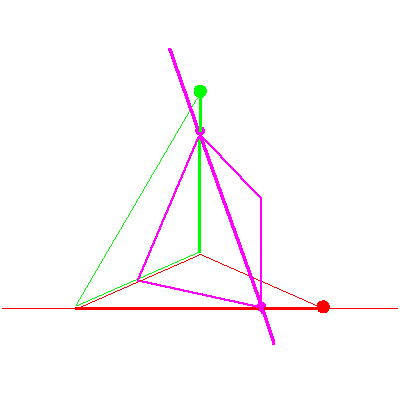
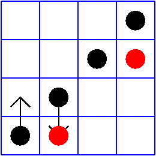

The line lying in a fixed plane in P3


The line lying in a fixed plane in P3 |
|
|  |
In the first stage of the specialization sequence, the moving plane rotates about the line until it contains the stationary point, nothing happens to the solution line. Two black checkers change places, but the red checkers stay. This is the case of (no,no) in Table 2/Figure 8 of A Geometric Littlewood Richardson Rule, hereafter called GLR. |
|  |